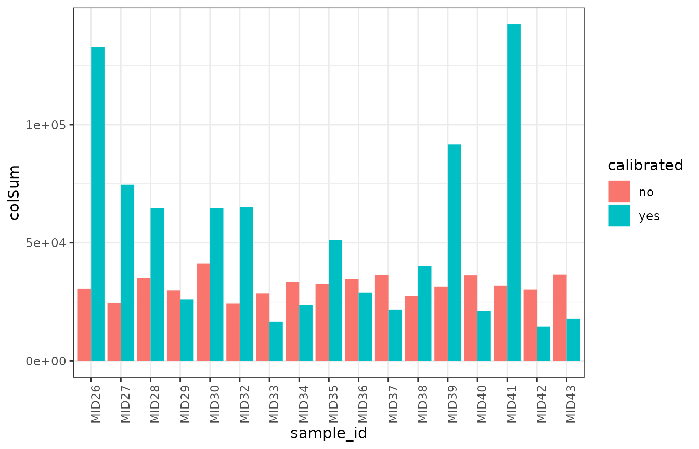

vignettes/recalibrare_spikein_data.Rmd
recalibrare_spikein_data.RmdOne of the main characteristics of the Stammler_2016_16S_spikein dataset is the presence of spike-in bacteria with a known fixed amount of bacterial cells. These known loads of bacteria can be used to recalibrate the raw counts of the matrix and obtain recalibrated absolute counts. In this vignette, we provide an example of how to recalibrate the counts of the count matrix based on the read counts of Salinibacter ruber. This procedure is referred to as Spike-in-based calibration to total microbial load (SCML) in Sammler et al., 2016.
tse <- getBenchmarkData('Stammler_2016_16S_spikein', dryrun = FALSE)[[1]]
#> Warning: No taxonomy_tree available for Stammler_2016_16S_spikein.
#> Finished Stammler_2016_16S_spikein.
counts <- assay(tse)Identifiers of the spiked-in bacteria have the suffix ‘XXXX’.
| Bacteria | ID | Load |
|---|---|---|
| Salinibacter ruber | AF323500XXXX | 3.0 x 108 |
| Rhizobium radiobacter | AB247615XXXX | 5.0 x 108 |
| Alicyclobacillus acidiphilus | AB076660XXXX | 1.0 x 108 |
This recalibration is based on the original article. The only difference is that the numbers have been rounded up to obtain counts.
## AF323500XXXX is the unique OTU corresponding to S. ruber
s_ruber <- counts['AF323500XXXX', ]
size_factor <- s_ruber/mean(s_ruber)
SCML_data <- counts
for(i in seq(ncol(SCML_data))){
SCML_data[,i] <- round(SCML_data[,i] / size_factor[i])
}Brief comparison of counts
no_cal <- counts |>
colSums() |>
as.data.frame() |>
tibble::rownames_to_column(var = 'sample_id') |>
magrittr::set_colnames(c('sample_id', 'colSum')) |>
mutate(calibrated = 'no') |>
as_tibble()
cal <- SCML_data |>
colSums() |>
as.data.frame() |>
tibble::rownames_to_column(var = 'sample_id') |>
magrittr::set_colnames(c('sample_id', 'colSum')) |>
mutate(calibrated = 'yes') |>
as_tibble()
data <- bind_rows(no_cal, cal)
data |>
ggplot(aes(sample_id, colSum)) +
geom_col(aes(fill = calibrated), position = 'dodge') +
theme_bw() +
theme(axis.text.x = element_text(angle = 90, hjust = 1))
The counts matrix can be replaced in the original tse in order to preserve the same metadata.
assay(tse) <- SCML_data
tse
#> class: TreeSummarizedExperiment
#> dim: 4036 17
#> metadata(0):
#> assays(1): counts
#> rownames(4036): GQ448052 EU458484 ... DQ795992 GQ492848
#> rowData names(1): taxonomy
#> colnames(17): MID26 MID27 ... MID42 MID43
#> colData names(12): dataset subject_id ... country description
#> reducedDimNames(0):
#> mainExpName: NULL
#> altExpNames(0):
#> rowLinks: NULL
#> rowTree: NULL
#> colLinks: NULL
#> colTree: NULL
sessionInfo()
#> R version 4.2.2 (2022-10-31)
#> Platform: x86_64-pc-linux-gnu (64-bit)
#> Running under: Ubuntu 20.04.5 LTS
#>
#> Matrix products: default
#> BLAS: /usr/lib/x86_64-linux-gnu/blas/libblas.so.3.9.0
#> LAPACK: /usr/lib/x86_64-linux-gnu/lapack/liblapack.so.3.9.0
#>
#> locale:
#> [1] LC_CTYPE=C.UTF-8 LC_NUMERIC=C LC_TIME=C.UTF-8
#> [4] LC_COLLATE=C.UTF-8 LC_MONETARY=C.UTF-8 LC_MESSAGES=C.UTF-8
#> [7] LC_PAPER=C.UTF-8 LC_NAME=C LC_ADDRESS=C
#> [10] LC_TELEPHONE=C LC_MEASUREMENT=C.UTF-8 LC_IDENTIFICATION=C
#>
#> attached base packages:
#> [1] stats4 stats graphics grDevices utils datasets methods
#> [8] base
#>
#> other attached packages:
#> [1] tidyr_1.2.1 ggplot2_3.4.0
#> [3] dplyr_1.0.10 MicrobiomeBenchmarkData_1.0.0
#> [5] TreeSummarizedExperiment_2.4.0 Biostrings_2.64.1
#> [7] XVector_0.36.0 SingleCellExperiment_1.18.1
#> [9] SummarizedExperiment_1.26.1 Biobase_2.56.0
#> [11] GenomicRanges_1.48.0 GenomeInfoDb_1.32.4
#> [13] IRanges_2.30.1 S4Vectors_0.34.0
#> [15] BiocGenerics_0.42.0 MatrixGenerics_1.8.1
#> [17] matrixStats_0.62.0 BiocStyle_2.24.0
#>
#> loaded via a namespace (and not attached):
#> [1] nlme_3.1-160 bitops_1.0-7 fs_1.5.2
#> [4] bit64_4.0.5 filelock_1.0.2 httr_1.4.4
#> [7] rprojroot_2.0.3 tools_4.2.2 bslib_0.4.1
#> [10] utf8_1.2.2 R6_2.5.1 colorspace_2.0-3
#> [13] DBI_1.1.3 lazyeval_0.2.2 withr_2.5.0
#> [16] tidyselect_1.2.0 bit_4.0.4 curl_4.3.3
#> [19] compiler_4.2.2 textshaping_0.3.6 cli_3.4.1
#> [22] desc_1.4.2 DelayedArray_0.22.0 labeling_0.4.2
#> [25] bookdown_0.29 sass_0.4.2 scales_1.2.1
#> [28] rappdirs_0.3.3 pkgdown_2.0.6 systemfonts_1.0.4
#> [31] stringr_1.4.1 digest_0.6.30 yulab.utils_0.0.5
#> [34] rmarkdown_2.17 pkgconfig_2.0.3 htmltools_0.5.3
#> [37] highr_0.9 dbplyr_2.2.1 fastmap_1.1.0
#> [40] rlang_1.0.6 RSQLite_2.2.18 farver_2.1.1
#> [43] jquerylib_0.1.4 generics_0.1.3 jsonlite_1.8.3
#> [46] BiocParallel_1.30.4 RCurl_1.98-1.9 magrittr_2.0.3
#> [49] GenomeInfoDbData_1.2.8 Matrix_1.5-1 munsell_0.5.0
#> [52] Rcpp_1.0.9 fansi_1.0.3 ape_5.6-2
#> [55] lifecycle_1.0.3 stringi_1.7.8 yaml_2.3.6
#> [58] zlibbioc_1.42.0 BiocFileCache_2.4.0 grid_4.2.2
#> [61] blob_1.2.3 parallel_4.2.2 crayon_1.5.2
#> [64] lattice_0.20-45 knitr_1.40 pillar_1.8.1
#> [67] codetools_0.2-18 glue_1.6.2 evaluate_0.18
#> [70] BiocManager_1.30.19 vctrs_0.5.0 treeio_1.20.2
#> [73] gtable_0.3.1 purrr_0.3.5 assertthat_0.2.1
#> [76] cachem_1.0.6 xfun_0.34 tidytree_0.4.1
#> [79] ragg_1.2.4 tibble_3.1.8 memoise_2.0.1